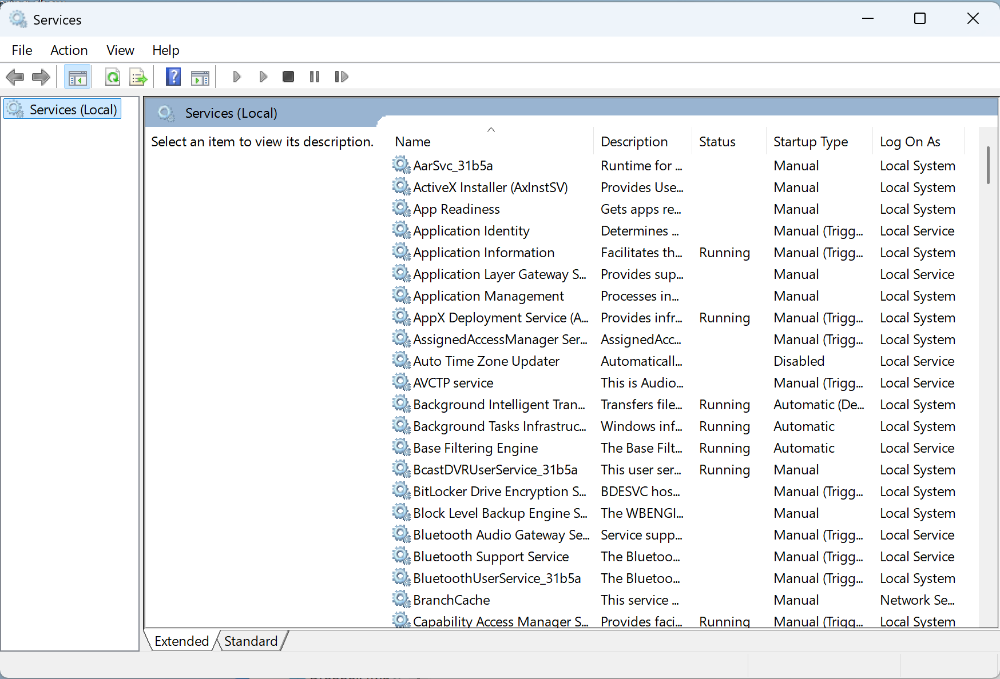
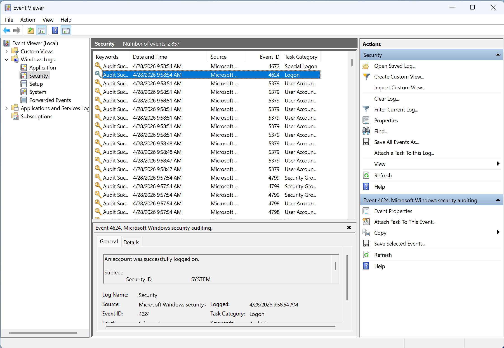
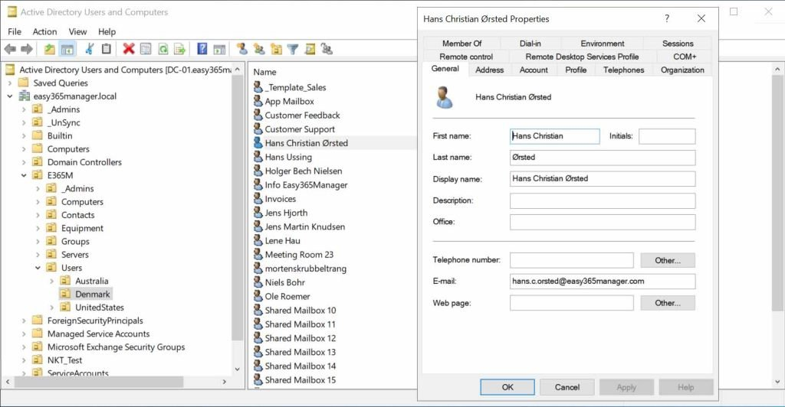
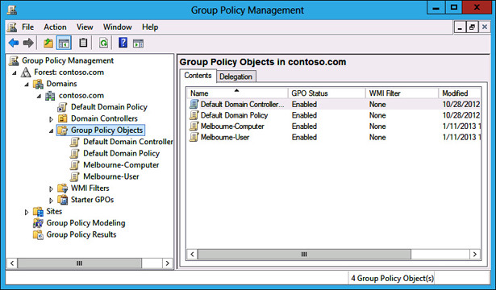
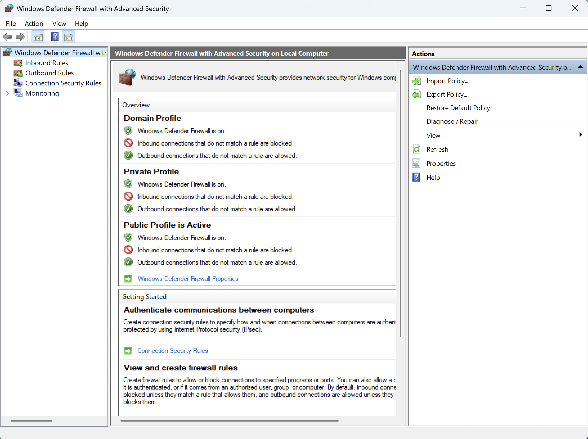
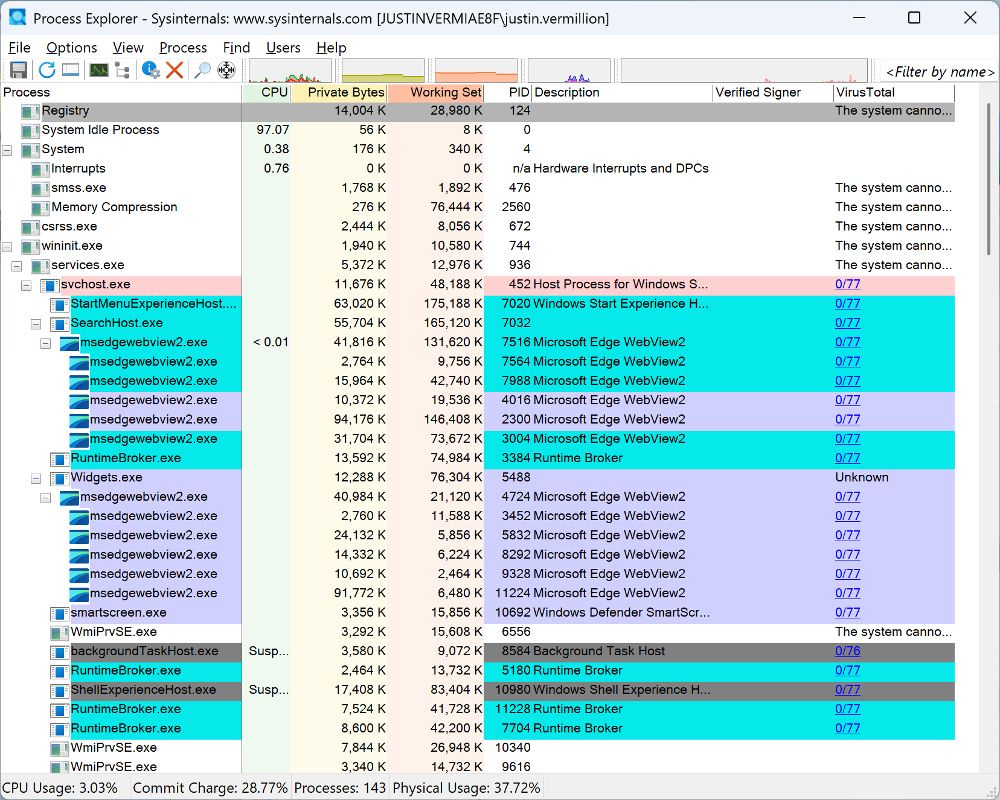

You've studied the concepts. Now meet the operating system that runs most of the enterprise world.
Roughly 70% of desktop and laptop endpoints worldwide run Windows. The vast majority of corporate workstations you'll defend are Windows.
Most ransomware, most commodity malware, and most enterprise breaches target Windows endpoints — especially Active Directory.
Active Directory and Entra ID (Azure AD) are still the identity backbone for most enterprises. Compromise AD, you compromise everything.
Help desk, SOC analyst, sysadmin, IR, pentester — every entry-level cyber role demands Windows fluency.
How Windows is built, how identity works locally, and how it differs from the Linux model you already know.
Domains, OUs, trusts, Kerberos, NTLM, and how a domain controller becomes the crown jewel.
Group Policy, password policy, the Windows Firewall, BitLocker, Defender, and the modern Microsoft security baseline.
Sysinternals, Event Viewer, PowerShell, and the attacks (PtH, Kerberoast, Mimikatz) every Windows defender must recognize.
| Linux concept | Windows equivalent | Note |
|---|---|---|
| root / sudo | Administrator, SYSTEM, UAC elevation | SYSTEM is more powerful than Administrator |
| /etc/passwd, /etc/shadow | SAM database, NTDS.dit (AD) | Hashes, not passwords |
| UID / GID | SID (Security Identifier) | Long string, globally unique |
| chmod / POSIX bits | NTFS ACLs (DACL/SACL) | Far more granular than rwx |
| systemd / init.d | Services (services.msc) | Run as accounts, configurable |
| cron | Task Scheduler | Common malware persistence spot |
| syslog / journalctl | Event Viewer / Windows Event Log | XML-based, channel-organized |
| /etc config files | Registry (HKLM, HKCU) | Hierarchical, binary-backed |
| bash | PowerShell (cmd.exe is legacy) | Object pipeline, not text |
| iptables / nftables | Windows Defender Firewall | Profile-aware (Domain/Private/Public) |
How Windows is built, and who is allowed to do what
Where applications, services, and most attacks live. Includes explorer.exe, svchost.exe, browsers, your PowerShell session.
ntoskrnl.exe, drivers, hardware abstraction layer (HAL). Code here can do anything — rootkits and Pluton/Secure Boot defenses both target this layer.
lsass.exe validates logons and stores secrets in memory. Attackers love it. Windows now ships LSA Protection (RunAsPPL) on by default.
Win32 (apps), WSL2 (Linux kernel inside Windows), and the .NET runtime. Each is an attack surface.
Consumer. Cannot join a domain. No Group Policy editor. BitLocker is the basic "Device Encryption" only.
Domain join, Group Policy, full BitLocker, Hyper-V, Windows Sandbox. The minimum bar for a workstation in a real environment.
Adds Credential Guard, Application Guard, AppLocker, WDAC, Defender for Endpoint integration, advanced telemetry control.
Runs domain controllers, file servers, IIS, Hyper-V hosts. Server 2025 enables stronger NTLM blocking and Local KDC by default.
Every security principal — user, group, computer — has a Security Identifier (SID). The SID, not the name, is what Windows actually checks.
S-1-5-21-3623811015-3361044348-30300820-1013
Domain/machine identifier ————————————————————————→ RID
Local accounts and password hashes live in the SAM hive on every machine (C:\Windows\System32\config\SAM). Domain accounts live in NTDS.dit on the domain controller.
Full local control. Can install drivers, change any setting, read any file. Treat membership like a loaded weapon.
Administrator on every machine in the domain. The single most-targeted group in any breach.
Standard logon rights, no admin power. This is where most accounts should live.
Legacy. Microsoft kept the group for compatibility but it's largely equivalent to Users now — do not rely on it.
Allowed to log in via RDP. Audit aggressively — RDP is one of the most-attacked services on the internet.
Can read & write any file, bypassing ACLs, "for backup purposes." Effectively admin. Audit accordingly.
Every NTFS object (file, folder, registry key) carries an ACL made of ACEs. Each ACE says "principal X is allowed/denied permission Y." Far richer than Linux rwx.
Permissions inherit from parent folders by default. Deny ACEs win over Allow. SACLs (System ACL) drive auditing — what gets logged in Event Viewer.
icacls C:\Data /grant "Domain Users":(RX)
When an admin logs in, Windows hands them two tokens: a standard one for normal work and a filtered elevated one. UAC is the prompt that swaps in the elevated token.
In Windows 11 25H2, Microsoft is rolling out Administrator Protection: admins run as standard users by default and use just-in-time, isolated admin tokens that don't persist. Goal: kill the entire UAC bypass class.
A hierarchical key/value database storing OS, driver, and app configuration. Think of it as /etc + parts of /proc + parts of GConf, all merged.
Local Machine. System-wide settings: services, drivers, software policies. Requires admin to write.
Current User. Per-user preferences, including auto-run entries. Writable by the user — common malware home.
All user hives. HKCU is just a view onto the current user's subkey here.
File associations & current hardware profile. Mostly views onto HKLM.
Notorious persistence keys: HKCU\Software\Microsoft\Windows\CurrentVersion\Run and the RunOnce sibling. Always check these.
A long-running background process started by the Service Control Manager (SCM). Runs as a configured account: SYSTEM, LOCAL SERVICE, NETWORK SERVICE, or a custom user.
services.msc | sc.exe query | Get-Service

XML-structured logs grouped into channels. The four classic logs — Application, Security, System, Setup — are joined by hundreds of "Applications and Services" channels.
Successful / failed logon. Includes Logon Type (2 = interactive, 3 = network, 10 = RDP).
Process creation. With command-line auditing enabled, this is gold for IR.
Special privileges assigned to a new logon — an admin just signed in.
User account created / member added to a privileged group.
The audit log was cleared. Always investigate.

PowerShell is an object-pipeline shell and scripting language. It is the standard admin interface for Windows and AD — and the most-abused offensive tool on the platform.
Get-Process | Sort-Object CPU -Desc Get-Service | Where Status -eq Running Get-LocalUser Get-EventLog Security -Newest 50 Get-NetTCPConnection -State Listen
The directory that runs the enterprise — and the prize attackers want most
"Joining a domain" means: this PC trusts the DCs to authenticate users and accepts policy from them.
The top-level security boundary in AD. One or more domain trees that share a schema and global catalog. Cross-forest trust is the real trust boundary.
A namespace and replication unit (e.g. corp.contoso.com). Holds users, computers, groups. Contains its own DCs.
A container inside a domain for organizing objects. The unit you target with Group Policy and delegated administration.
Users, Groups, Computers, Service Accounts, GPOs, Printers. Each has attributes and a SID.
A DC contains every credential in the domain. Compromising one = compromising the entire domain. Protect with: physical security, separate Tier-0 admins, no general-purpose software, no internet browsing, dedicated jump hosts (PAW — Privileged Access Workstations).
Create/manage users, groups, OUs. The classic GUI.
Create and link GPOs to OUs/domains/sites.
Get-ADUser, New-ADUser, Get-ADGroupMember, Set-ADAccountPassword
Remote Server Administration Tools — lets a workstation manage AD without logging into the DC. Standard for sysadmins.
AC has the recycle bin, fine-grained password policies UI, and a PowerShell history pane. ADUC is faster muscle-memory.

AS-REQ / AS-REP: User proves they know the password. KDC (the DC) hands back a TGT (Ticket Granting Ticket) encrypted with the krbtgt account's key.
TGS-REQ / TGS-REP: User presents the TGT and asks for a service ticket for, say, a file share. KDC returns a service ticket encrypted with the target service's key.
AP-REQ: User presents the service ticket directly to the file server. Server decrypts it with its own key and grants access.
Two attack-relevant facts: krbtgt's hash signs every TGT (golden ticket), and service tickets are encrypted with the service account's password hash (kerberoasting).
Audit. Windows 11 24H2 and Server 2025 ship enhanced NTLM auditing so admins can find what still uses it.
IAKerb lets Kerberos work even when the client can't reach a DC directly. Local KDC brings Kerberos to local accounts — killing the most common reason NTLM fires.
Network NTLM disabled by default. Re-enabling requires explicit policy. NTLMv1 is being force-blocked October 2026.
Stores NT hashes (MD4 of the UTF-16 password). Only readable as SYSTEM. Tools like Mimikatz dump it.
Every domain user's hash, on every DC. The crown jewels file. Read-protected by SYSTEM and the DC's BootKey.
Holds tickets, hashes, and (historically) cleartext passwords for currently logged-on users. Defended by LSA Protection (RunAsPPL) and Credential Guard.
Per-user encrypted blob storage: browser passwords, RDP creds, Wi-Fi keys. Decryptable as the user.
How thousands of machines stay configured the same way
A Group Policy Object (GPO) is a bundle of settings — security, software, scripts, registry — that AD pushes to users and computers. The most powerful management tool in the Windows world.
Applies at boot. Settings about the machine itself: services, firewall rules, BitLocker, security options, software install, logon scripts.
Applies at logon. Settings that follow the user: drive maps, printers, redirected folders, desktop restrictions, browser policy.

Local — the machine's own Local Group Policy. Applied first.
Site — AD-site-linked GPOs. Useful for VPN, geo-specific rules.
Domain — GPOs linked to the domain root. Affects everyone.
Organizational Unit — closest OU wins by default. Last writer, last word.
Modifiers: Block Inheritance stops parent GPOs. Enforced overrides Block Inheritance. Security Filtering targets specific groups. Use gpresult /h to see what actually applied.
Modern guidance: 14+ characters. Microsoft baseline allows up to 128.
Three of four character classes if enabled. NIST SP 800-63B no longer requires this if length is sufficient.
Remember last 24 passwords; prevent reuse.
Modern NIST guidance: don't force periodic rotation unless compromise is suspected. Microsoft's baseline removed mandatory rotation in 2019.
Set to 1+ day so users can't cycle back to the old password.
Always Disabled. Yes, the option still exists.
Slows brute-force and password spraying. Tune carefully — too aggressive = self-inflicted denial of service.
Microsoft baseline: 10 bad attempts. (0 = never lock, dangerous.)
15 minutes is standard. Auto-unlocks afterward.
15 minutes — how long bad attempts are remembered.
A domain has one Default Domain Policy — but you often want admins to have stricter rules than ordinary users. FGPP solves this with Password Settings Objects (PSOs) applied to specific groups.
AD Administrative Center → System → Password Settings Container. Apply via group membership, not OU.
A free, Microsoft-published bundle of GPOs and Intune policies that hardens Windows to a sensible default. The 2026 baseline tracks Windows 11 25H2 and Server 2025.
Host-based, stateful, and on by default. Far more capable than people assume — per-app, per-protocol, with three independent profiles.
Active when the PC sees its DC. Usually most permissive (file shares, RDP for admins).
Trusted home network. Discovery on, sharing optional.
Coffee shops, airports. Strict — almost everything inbound denied.
Two console choices: Settings app (basic) and wf.msc — Windows Firewall with Advanced Security — for full rule editing.
Get-NetFirewallRule | Where Enabled -eq True | Select DisplayName,Direction,Action

~20 named rules that block common attacker behaviors. Enabled via GPO, Intune, PowerShell, or registry. Each rule has Audit, Block, and Warn modes.
Block Office apps from creating child processes
Block executable content from email/webmail
Block credential stealing from LSASS (anti-Mimikatz)
Block process creations from PSExec / WMI
Block JavaScript/VBScript from launching downloaded executables
Block Office macros from making Win32 API calls
Block persistence through WMI event subscription
Use advanced ransomware protection (cloud-driven)
AI + signing-based allow/deny built into the OS. Only enabled on clean installs. For consumer-grade allowlisting.
Path/publisher/hash-based application control via GPO. Easier to deploy than WDAC, weaker against determined attackers.
Kernel-enforced code integrity policy. Blocks unsigned drivers, unsigned binaries, dangerous "LOLBins." Modern replacement for AppLocker, but harder to author.
Crypto coprocessor on the motherboard. Stores BitLocker keys, performs attestation, generates randomness. Required for Windows 11.
Firmware verifies the bootloader's signature before running it. Stops bootkits.
Hyper-V runs a tiny secure kernel that the regular kernel can't see into. Hosts HVCI (memory integrity) and Credential Guard.
Newer security processor integrated directly into the CPU. Replaces discrete TPM on supported chips, and gets firmware updates via Windows Update.
Marks lsass.exe as a Protected Process Light. Other processes (even admins) can't read its memory or inject code. Default-enabled on new Windows 11 installs.
Goes further: NTLM hashes, Kerberos TGTs, and cached credentials live in an isolated VBS enclave (LsaIso.exe) the OS itself can't read. Mimikatz can't dump what isn't there.
Most successful breaches still exploit patches that have been available for months. Patch latency is a security control.
What every Windows defender keeps in their toolbox
Free Microsoft-published utilities created by Mark Russinovich. Originally an outside company; bought by Microsoft in 2006 and still updated quarterly. Live download: https://live.sysinternals.com
Task Manager on steroids. Process tree, signatures, VirusTotal hashes.
Every auto-start location on the system. ~90+ persistence vectors.
Real-time file, registry, and process events. Essential for triage.
Service that adds rich detection events to the Windows Event Log.
Live network connections by process — netstat with a UI.
Remote exec, signature audits, file-handle inspection.
Options → Verify Image Signatures. Options → VirusTotal.com. Once you see "Not Verified" next to a SYSTEM-level process, your day just got interesting.

Lists every place Windows or its apps automatically run code: Run keys, Services, Scheduled Tasks, WMI subscriptions, Winlogon, Print Monitors, AppInit DLLs, and dozens more.
A merged real-time stream of every file, registry, network, and process event — with full stack traces. Generates millions of events fast; filtering is everything.
Filter → Process Name is <target>. Then exclude SUCCESS results, exclude common noise paths. Save the filter for next time.
A driver + service that writes detailed events to Microsoft-Windows-Sysmon/Operational. Survives reboot, applies an XML config, ships rich attacker-relevant fields the default log doesn't have.
Process create — with hashes, parent, full command line
Network connection — which process, which IP, which port
Image (DLL) loaded — great for unsigned DLL hunting
Process accessed — e.g. "something opened LSASS"
File create — which process wrote what
DNS query — per process
If you defend Windows, these are the names you must know
For NTLM, the hash IS the password. If an attacker steals an NT hash from one machine's memory or SAM, they can authenticate as that user anywhere NTLM is accepted — without ever cracking it.
Any authenticated domain user can request a service ticket for any SPN. The ticket is encrypted with the service account's password hash — offline-crackable.
If an attacker steals the krbtgt hash from a DC, they can forge a TGT for any user, with any group membership, valid for years. Total domain compromise.
Defense: rotate krbtgt twice when DC compromise is suspected. After that, rebuild the forest.
Forged service ticket signed with a single service account's hash. Bypasses the DC entirely — the target service trusts the ticket on its own.
Defense: enable PAC validation, rotate service-account passwords, ditch RC4.
Attacker stands between a victim and a server. Coerces the victim to authenticate to them, then relays that authentication to a real server — and gets in as the victim. No password ever cracked.
Why drop malware when Windows ships signed binaries that can do it for you? "LOLBins" are legitimate Microsoft executables abused for download, execute, persistence, or evasion.
Email → Word/Excel attachment → macro → powershell.exe with encoded payload → download stage 2 → persistence.
Microsoft now blocks macros from internet-zone Office files by default. Attackers pivoted to ISO/IMG/LNK, OneNote, HTML smuggling, and ClickOnce/MSI tricks.
Training won't carry the load alone. Configuration controls do most of the work.
Local Administrator Password Solution. Every joined machine gets a unique, randomly generated local admin password, rotated on a schedule, escrowed encrypted in AD or Entra ID. Built into Windows 11 / Server 2022+.
Without LAPS, every workstation in the org has the same local admin password. Compromise one, you've compromised them all (Pass-the-Hash heaven).
PIN, fingerprint, or face unlocks a device-bound credential held in the TPM. The PIN never leaves the device; the cloud sees a public key. Phishing-resistant by design.
PIV / CAC cards, YubiKeys. AD has supported smart card logon for decades; Entra ID and Windows 11 add native FIDO2 / passkey logon.
"Require compliant device + MFA + known location for this app" — the modern policy layer above plain MFA.
HTTPS by default since 2022. Constrain with JEA (Just Enough Administration) endpoints.
Yes, OpenSSH ships in the box now. Treat it the same way you'd treat it on Linux.
Block-level snapshots used by System Restore, Previous Versions, and most third-party backup software. Ransomware deletes these first — so monitor vssadmin delete shadows.
A backup nobody has restored is a hope, not a control.
Built-in. Endpoints push selected events to a Windows Event Collector via WinRM. Free, enterprise-scale, no agent needed.
Splunk, Sentinel, Elastic, Chronicle. Ingests logs, correlates, alerts. The analyst's main lens.
Defender for Endpoint, CrowdStrike, SentinelOne. Live process telemetry, automated response, threat hunting queries (KQL).
A SIEM nobody reads catches nothing. Detection engineering — tuning, content, runbooks — is half the job.
TPM 2.0, Pluton, Secure Boot, DMA protection
Measured boot, ELAM, HVCI, signed drivers
Hello, FIDO2, Credential Guard, LAPS, MFA
Group Policy / Intune, Security Baseline, ASR
SmartScreen, WDAC, AppLocker, Smart App Control
BitLocker, EFS, Information Protection, DLP
Firewall profiles, IPsec, VPN, segmentation
Defender, Sysmon, WEF, SIEM, EDR, IR runbooks
SIDs, not names, are how Windows identifies principals. Tokens carry SIDs through every access check.
Active Directory is the enterprise — protect the DCs and the krbtgt account like the crown jewels they are.
Group Policy applies Local → Site → Domain → OU. Closest OU usually wins. Use gpresult when in doubt.
Modern password policy = long, screened against breach lists, no forced rotation. Lockout protects against spraying.
NTLM is dying. Kerberos-only, SMB signing, LDAP channel binding, no LLMNR — that's the path.
Defender + ASR + Credential Guard + LAPS + Smart App Control / WDAC neutralizes most commodity Windows attacks.
Sysinternals + Event Viewer + PowerShell are your eyes. Sysmon plus a SIEM are your memory.
The Sec+ vocabulary you already had — identity, AAA, least privilege, defense in depth, IR — just got a Microsoft accent.
Time to put hands on keyboards.